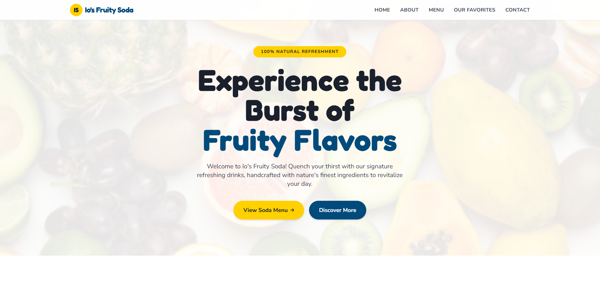

Passionate
WEB
DESIGNER
Versatile UI/UX Designer & QA Specialist based in the Philippines. I build accessible, high-performance websites with a focus on quality.
About
Are you looking for creative design? Let me help you!
I am Jerome Baladjay, a versatile Web Designer, QA, and UI-UX Designer based in the Philippines. I specialize in front-end development, usability testing, and strict process inspection.
Beyond building user-friendly websites, I develop custom browser tools like Broken Link Checkers and Alt Text Viewers to streamline quality assurance processes and website auditing.


What I Do
Responsive Design & Quality Assurance
I am committed to ensuring that all devices are fully responsive, functional, and aligned with the highest quality standards. This involves conducting thorough checks and evaluations throughout the development and implementation process to guarantee optimal performance across various screen sizes, platforms, and user environments.
I pay close attention to each requirement provided, carefully analyzing and validating that every detail is accurately addressed. By consistently reviewing outputs against the original requests, I am able to maintain a high level of precision, reliability, and user satisfaction. My approach emphasizes both technical accuracy and usability, ensuring that the final deliverables not only meet but exceed expectations.
Services
What I Do
Web Design
Creating responsive, beautiful, and user-friendly websites using modern tools and Duda platforms.
UI/UX Design
Crafting intuitive user interfaces that prioritize user needs, accessibility, and modern aesthetics.
QA & Control
Executing rigorous test plans, monitoring processes, and conducting thorough web inspections.
Custom Tools
Building custom browser extensions (Content Checker) to streamline auditing workflows.
Portfolio
My Projects

Business Website
Io's Fruity Soda
Business Website
Josh Guitar Setup

Game Website
Tribo Pilipino

Custom Chrome Tool
Content Checker
Quickly check if text exists on a webpage with instant highlighting and missing reports.

Achievements
Certificates & Awards
Duda Certified Professional
Platform Specialist, Editor 2.0 & Web Design Certified.
Top 1 Project Demo
Awarded during Digibeacon Internship for ITSM & CRM Demo.
ClickUp Expert
Completed Novice, Intermediate, and Expert levels.
Get In Touch
Let's build something brilliant together.
Feel free to reach out if you're looking for a developer, have a question, or just want to connect.